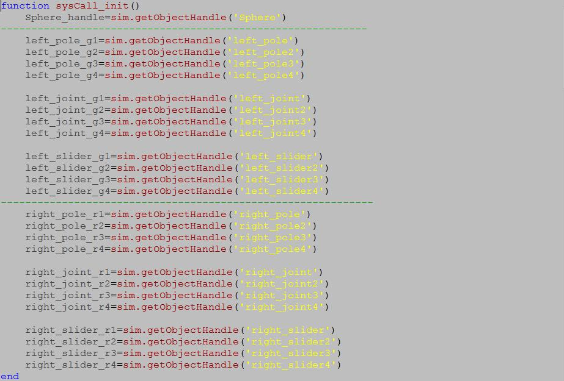

process explanation

程式解釋
類似人對機的定義
需要標明清楚
守門員的程式與其他人的程式相差是在於，設定的X軸跟Y軸的位置差所針對的部分是球的型心與桿子的型心所做的位置差，為了避免有空踢的可能性，所以必須在前、中、後上給予在Y軸上的彌補，其用意除了在空踢以外，還要避免當球員道極限位置時要求另一個球員要去踢球，必須在第一大迴圈中給的X要>= -1要求球員要在X軸為 1 的範圍內可以判定球的X軸在哪，再加上第二迴圈，用球的Y軸 <=0.1時，要求Y的設定之人偶去追蹤球，必須而外在假設當球的Y軸>0.1時，要求Y2的設定之人去追蹤球，第三迴圈，相對簡單，先告訴它假設 X < -0.05 時，要求欲踢狀態，額外假設X>-0.05 時，要求踢擊狀態，需要三層迴圈用意。